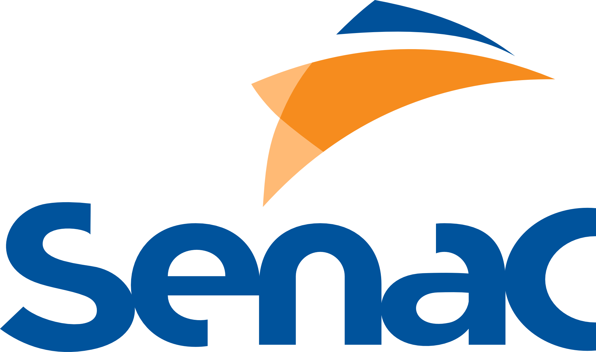

Nivel Facil: 5 Desafios (A descoberta)

curso de integração no Saber Senac sobre "Introdução à
Cultura Senac" e identifique os canais de ouvidoria citados no
$ 200 PTS
Finalizar 2 cursos rápidos de áreas diferentes, Atendimento no
Comércio, Higiene na Saúde. Missão: Identificar 1 valor ético
comum entre os dois cursos.
$ 600 PTS
Concluir 1 curso de Segurança da Informação.
Alterar a senha inicial conforme as normas de proteção
dos ativos imateriais.
$ 500 PTS
Realizar 2 cursos de curta duração sobre Inclusão Social.
Explicar como o Senac Recife pune práticas de
discriminação, conforme o Código de Ética.
$ 400 PTS

Realizar login no Saber Senac por 3 dias consecutivos.
Ler as pílulas de conhecimento sobre o uso de uniformes no
Centro do Recife.
$ 700 PTS